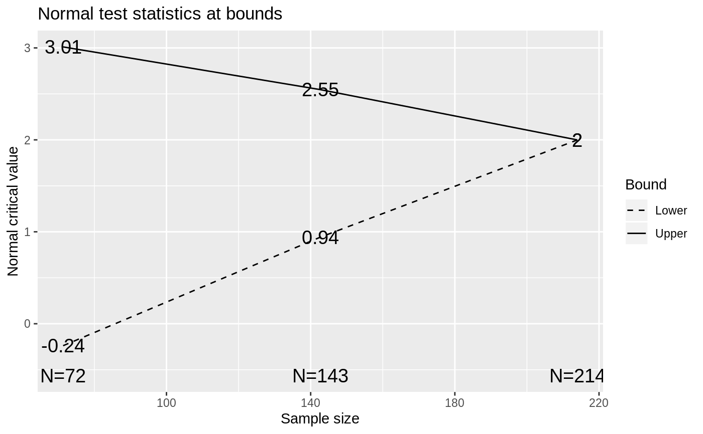

gsDesign-package-overview.RdgsDesign is a package for deriving and describing group sequential designs. The package allows particular flexibility for designs with alpha- and beta-spending. Many plots are available for describing design properties.
| Package: | gsDesign |
| Version: | 2 |
| License: | GPL (version 2 or later) |
Index:
gsDesign 2.1: Design Derivation gsProbability 2.2: Boundary Crossing Probabilities plot.gsDesign 2.3: Plots for group sequential designs gsCP 2.4: Conditional Power Computation gsBoundCP 2.5: Conditional Power at Interim Boundaries gsbound 2.6: Boundary derivation - low level normalGrid 3.1: Normal Density Grid binomial 3.2: Testing, Confidence Intervals and Sample Size for Comparing Two Binomial Rates Survival sample size 3.3: Time-to-event sample size calculation (Lachin-Foulkes) Spending function overview 4.0: Spending functions sfHSD 4.1: Hwang-Shih-DeCani Spending Function sfPower 4.2: Kim-DeMets (power) Spending Function sfExponential 4.3: Exponential Spending Function sfLDPocock 4.4: Lan-DeMets Spending function overview sfPoints 4.5: Pointwise Spending Function sfLogistic 4.6: 2-parameter Spending Function Families sfTDist 4.7: t-distribution Spending Function Wang-Tsiatis Bounds 5.0: Wang-Tsiatis Bounds checkScalar 6.0: Utility functions to verify variable properties
The gsDesign package supports group sequential clinical trial design. While there is a strong focus on designs using \(\alpha\)- and \(\beta\)-spending functions, Wang-Tsiatis designs, including O'Brien-Fleming and Pocock designs, are also available. The ability to design with non-binding futility rules allows control of Type I error in a manner acceptable to regulatory authorities when futility bounds are employed.
The routines are designed to provide simple access to commonly used designs
using default arguments. Standard, published spending functions are
supported as well as the ability to write custom spending functions. A
gsDesign class is defined and returned by the gsDesign()
function. A plot function for this class provides a wide variety of plots:
boundaries, power, estimated treatment effect at boundaries, conditional
power at boundaries, spending function plots, expected sample size plot, and
B-values at boundaries. Using function calls to access the package routines
provides a powerful capability to derive designs or output formatting that
could not be anticipated through a gui interface. This enables the user to
easily create designs with features they desire, such as designs with
minimum expected sample size.
Thus, the intent of the gsDesign package is to easily create, fully characterize and even optimize routine group sequential trial designs as well as provide a tool to evaluate innovative designs.
Jennison C and Turnbull BW (2000), Group Sequential Methods with Applications to Clinical Trials. Boca Raton: Chapman and Hall.
Proschan, MA, Lan, KKG, Wittes, JT (2006), Statistical Monitoring of Clinical Trials. A Unified Approach. New York: Springer.
library(ggplot2) # assume a fixed design (no interim) trial with the same endpoint # requires 200 subjects for 90% power at alpha=.025, one-sided x <- gsDesign(n.fix=200) plot(x)